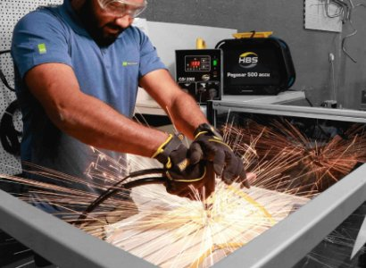

Are old machines slowing down your production and breakdowns creating havoc? Give your machines a second life, bringing them back more strong and efficient with the refurbished and retrofitted machinery service from YM Plus. We offer industrial machine refurbishment, extending the machine’s lifespan while enhancing its efficiency and performance.
We restore your machines to its optimal condition by repairing, replacing and reconditioning major components. We offer the following services:
Complete inspection of the machines
Replacement of run-down parts
Complete mechanical and structural restoring of machines
Running tests and quality checks before delivery.
Our retrofitted machinery services upgrade your machines with advanced technology improving its performance.
Replacing outdated motors and drives with modern and efficient systems.
Installing sensors for real-time monitoring and predictive maintenance.
Upgrading the machines with new safety features such as guards and emergency stops.
With our retrofitting services you get reconditioned industrial equipment upgraded to meet the current industry standards.
You can repair and upgrade your equipment and enhance its performance without needing to buy a new machine. Thus, you can avoid high capital investment.
Extend your machine’s lifespan by replacing worn-out components , reducing breakdowns and helping you get the best out of it.
Our team of expert technicians ensure that your machines are examined, restored and upgraded, minimizing downtime and maximizing productivity.
We follow a consistent and strategic approach to unlock the best out of your machine:
Inspection and assessment: we inspect and evaluate the machine’s condition and note the grievances.
Planning: as a next step we suggest the best refurbishment solution suited to the machine.
Implementation: upgrading and restoring your machine to a high productive state using industrial grade components.
Testing: testing the machine to assess working condition and efficiency post upgrade.
Delivery and Support: Safe delivery and on-going support for your used industrial equipment.
So, upgrade your machines with our retrofitting and refurbished machinery service and explore how we transform your current machines to next level productivity.
Retrofitting means the old machine is upgraded with new technology, automation, safety features and other performance improvements so as to meet the current production needs.
Refurbishing on the other hand, involves cleaning, repairing, replacing, and repainting, followed by the testing of key components in order to maintain the optimal condition of the machine.
Our service covers a wide range of machines such as CNC machines, press brakes, conveyor systems, industrial engines, cranes, forklifts and the likes.
Yes, retrofitting and refurbishing services can be customized based on the production requirements. Our technicians will assess the machine condition, production process, safety needs and other operational challenges and recommend the right solution.
Yes, our refurbished machines come with a six month warranty coverage, which depends on the replaced components and other agreed service terms.